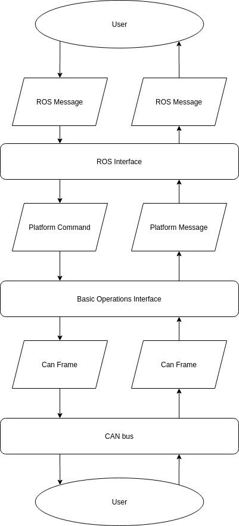

Mobile Robot System¶
System Structure¶
In general, most of the robots have an on-board embedded controller that will manage the low level control of individual motors to achieve a desired control input (velocity and steering angle/angular velocity).
The desired control input can be sent to the embedded controller in 3 main ways:
Remote controller via radio frequency
A physical connection via CAN bus
A physical connection via Serial bus
Furthermore, the embedded controller is also able to communicate the state of the platform to an external computer via the CAN or Serial bus. For most platforms, the On-board embedded controller send back messages on state of the platform, such as measured velocities, temperature, currents etc.
Hardware Interface¶
CAN/Serial interface¶
Information on CAN bus can be found in https://www.youtube.com/watch?v=FqLDpHsxvf8 and https://en.wikipedia.org/wiki/CAN_bus.
Many protocols for communication through the CAN bus is similar for different platforms. As such, a abstract class MobileBase was designed as the super class of the CAN interface class for each robot model.
On the level of MobileBase the following is settled:
Setting up CAN connection
Disconnecting CAN connection
Maintaining stream of CAN Frames
Setting up CAN connection¶
During the setting up of CAN connection, the protocol used to read the CAN Frame will be set. Since each platform will process CAN Frames differently, each platform will write its own ParseCANFrame(can_frame *rx_frame) function. The calling
To ensure the safe operation of the robot, a steady stream of commands from the computer and the onboard embedded controller is required. This is to ensure that if communication is lost, the robot would not be stuck executing the previously sent command, and instead the robot will stop moving.
Disconnecting CAN connection¶
Maintaining stream of CAN Frames¶
The control of this continuous stream of CAN Frames being sent to the embedded controller is controlled by the MobileBase in the void MobileBase::ControlLoop(int32_t period_ms) function. However, the types CAN Frames to be sent varies between robots. Therefore, the actual function designed to send each message is determined by each platform in the SendRobotCmd() function i.e. Each platform designs is CAN Frame sending protocol while the maintaining of the loop is on the MobileRobot abstract class.
ROS Interface¶
The libraries / packages is designed to bridge the communication between the a embedded controller on the mobile platforms and a higher level ROS environnement on a computer.
In summary, the packages written here converts ROS messages to CAN frames / Serial outputs and back.
The conversion from ROS message to CAN frame occurs in two main steps as shown in the flow chart.
{kind=link}
Moving down the flow chart:
The ROS interface will create a node that listens for ROS messages of a specified ROS topic.
The information in the ROS message will be translated into a platform-unique C++ data structure known as a Platform Command.
The Basic Operation package contains the subroutines required to translate these platform into CAN frames.
Furthermore, the package handles the communication of the CAN frame through the CAN bus.
Moving up the flow chart: 1. The Basic Operations Interface will also contain the subroutines required to read the CAN frames and translate them into platform-unique Platform Messages.
These messages can then be translated into ROS messages by the ROS interface.
The ROS interface will also handle publishing of these messages to the appropriate ROS topic.